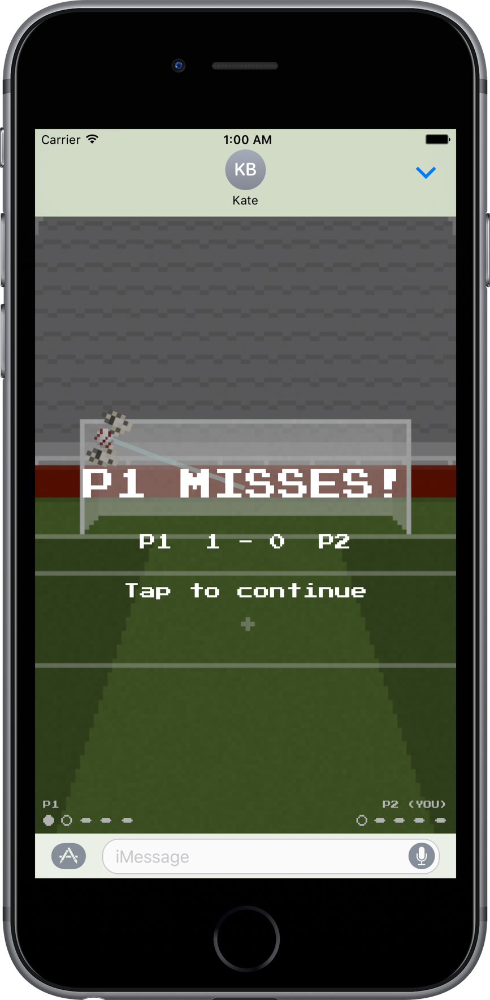

Classic Pens
A multiplayer penalty shootout game for iMessage
==============

==============

============
** CLASSIC RETRO GRAPHICS, TAKING YOU BACK TO THE DAYS OF SUPER KICK OFF
** MULTIPLAYER MODE AGAINST AN UNLIMITED NUMBER OF OPPONENTS AT ONCE
** SIMPLE, INTUITIVE CONTROLS. JUST DRAG YOUR FINGER TO WHERE YOU WANT TO SHOOT (OR SAVE)
** INSTANT REPLAYS OF YOUR PENALTIES, SO YOU CAN BASK IN THE GLORY — OR PROLONG YOUR ANGUISH
===========
"I never travel without it. It's so easy to practise saving penalties on the way to the match."
- GiGiBuff0n
"We could have done with this game before Italia 90. Would have sorted us right out."
- Psycho56
"This is simply the best retro penalties game I've ever seen on the iOS Messages AppStore."
- S0meGuy47
============
Classic Pens is a multiplayer penalty shootout game (with single player practice mode) exclusively for the iPhone Messages App Store. As a turn-based game (a bit like chess), you and your opponent alternate between taking and saving penalties.
You'll start by taking a penalty. You'll carefully judge the balance of shot power, shot accuracy, and shot swerve to slot your ball into the back of the net. Or so you hope.
Your opponent is then informed that you've taken your penalty via iMessage, and they are invited to try and save it. Once they've saved your penalty (or you've scored it), it's your opponent's turn to try and score. That's when you'll receive an instant replay of your attempt, and be invited to try and save their next pen.
============